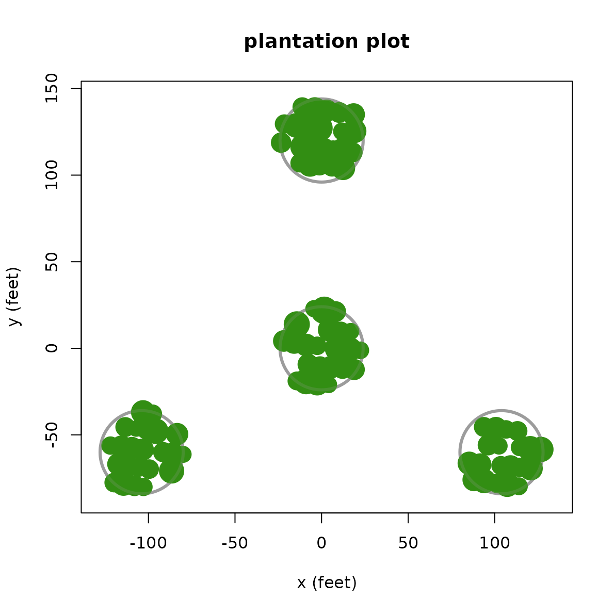
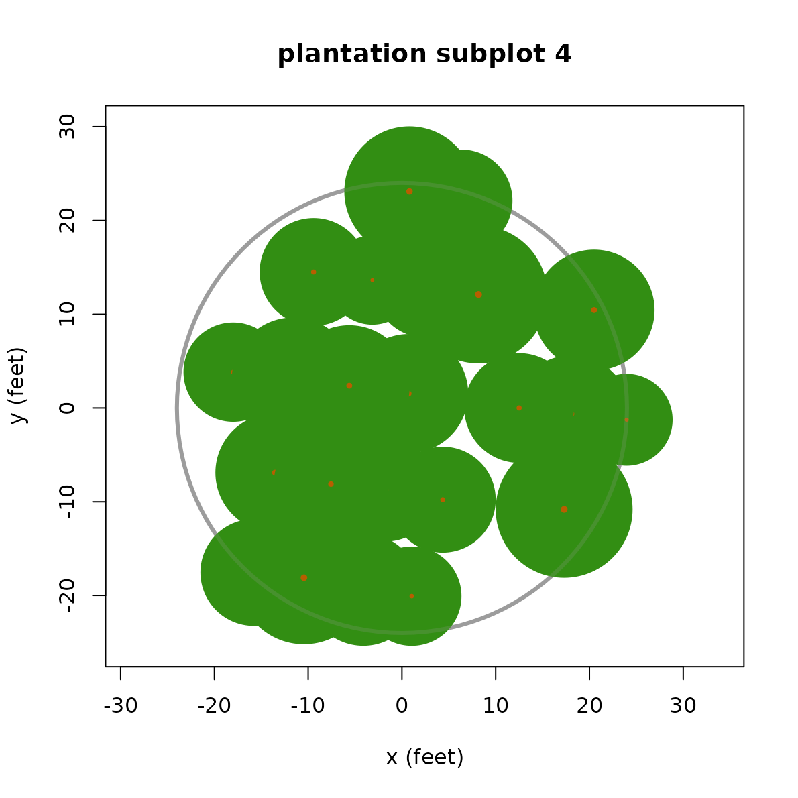
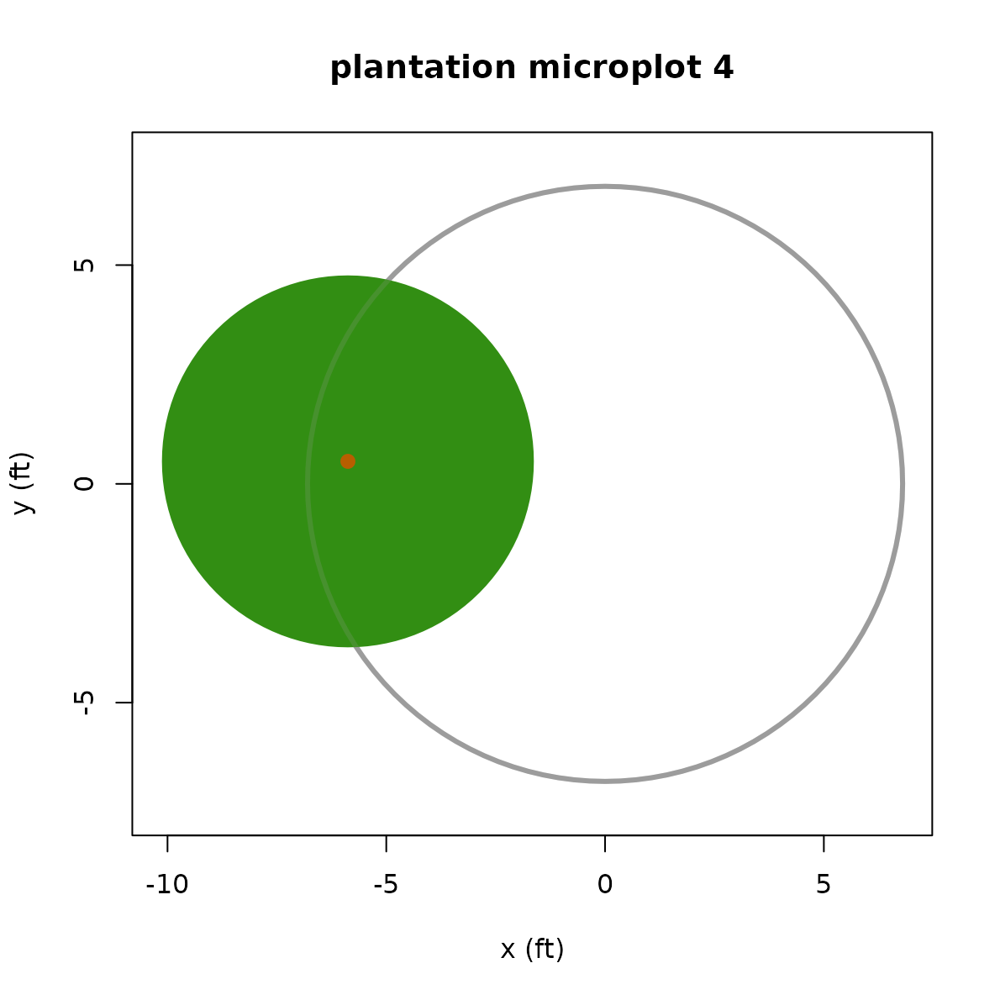

Display modeled tree crowns projected vertically on subplot boundaries
Source:R/plot_crowns.R
plot_crowns.Rdplot_crowns() draws vertically projected tree crowns as discs overlaid on
FIA subplot or microplot boundaries. The full four-subplot cluster, or
individual subplots, can be displayed with trees >= 5.0 in. (12.7 cm)
diameter. Individual microplots can also be displayed with saplings (i.e.,
trees < 5 in. diameter).
Usage
plot_crowns(
tree_list,
subplot = NULL,
microplot = FALSE,
linear_unit = "ft",
main = "",
crown_col = "#328e13",
stem_col = "#b85e00",
subp_border_lwd = 3,
subp_border_col = "gray61"
)Arguments
- tree_list
A data frame with tree records for one FIA plot. Must have columns
SUBP(FIA subplot number),STATUSCD(FIA integer tree status,1= live),DIA(tree diameter),HT(tree height),ACTUALHT(tree actual height,ACTUALHT < HTindicating a broken top),DIST(stem distance from subplot/microplot center),AZIMUTH(horizontal angle from subplot/microplot center to the stem location, in range0:359), andCRWIDTH(tree crown width).- subplot
Optional integer subplot number in the range
1:4indicating a specific subplot for display. May beNULLorNAto display the whole four-point cluster plot.- microplot
A logical value,
TRUEto display the modeled crowns of saplings overlaid of the microplot boundary ofsubplot = n. The default isFALSE. Ignored ifsubplotis not specified.- linear_unit
An optional character string specifying the linear distance unit. Defaults to the native FIA unit of
"ft", but may be set to"m"instead (or"meter"/"metre"), in which case subplot boundaries will be display in meters, tree heights and crown widths are assumed to be given in meters, and tree diameters are assumed to be given in centimeters. TODO: not currently implemented- main
Character string giving the main plot title (on top).
- crown_col
The color of tree crowns, e.g., either a color name (as listed by
colors()) or a hexadecimal string.- stem_col
The color of tree stems when plotting an individual subplot or microplot (see
crown_colabove).- subp_border_lwd
The line width of subplot boundaries. Must a positive number.
- subp_border_col
The color of subplot boundaries (see
crown_colabove).
Examples
trees <- within(plantation, CRWIDTH <- calc_crwidth(plantation))
plot_crowns(trees, main = "plantation plot")

plot_crowns(trees, subplot = 4, main = "plantation subplot 4")

plot_crowns(trees, subplot = 4, microplot = TRUE,
main = "plantation microplot 4")
